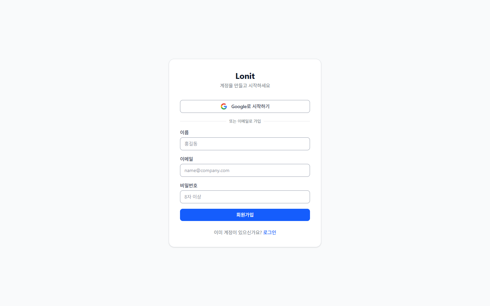
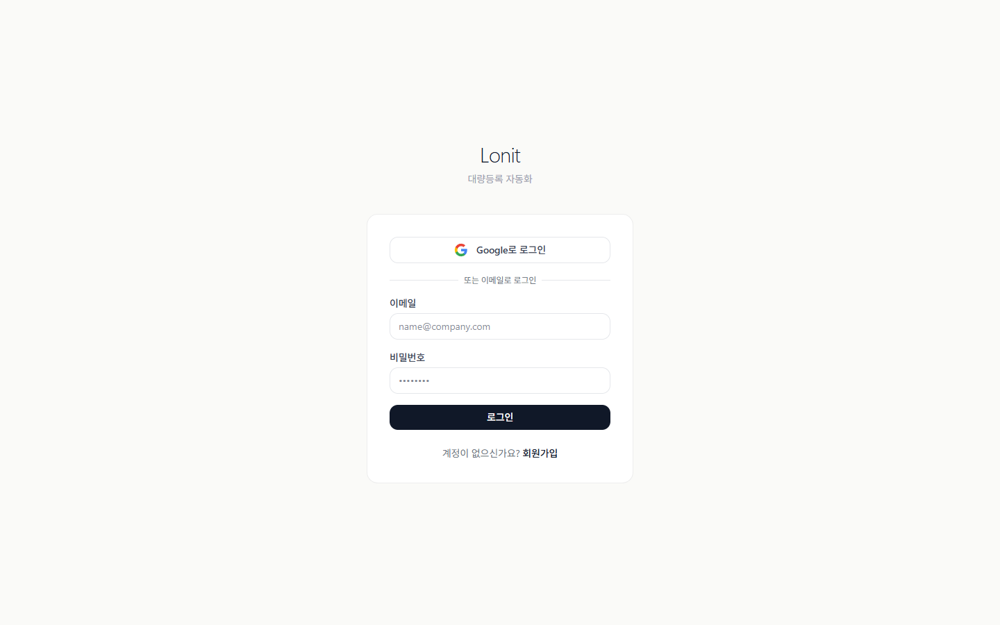

5분 빠른 시작🔗
목표: 가입 → 마켓 계정 등록 → 첫 상품 4마켓 업로드까지 한 번에.
이 챕터를 다 따라하면, 무신사에서 본 옷 한 벌이 5분 뒤에 스마트스토어·쿠팡·롯데온·11번가에 동시에 올라가 있습니다.
회원가입]) --> B([🔑
마켓 계정 등록]) B --> C([🌐
익스텐션 설치]) C --> D([💰
가격 정책 1개]) D --> E([📦
첫 상품 수집]) E --> F([🚀
4마켓 업로드]) F --> G((✅
끝)) style A fill:#dbeafe,stroke:#3b82f6 style B fill:#dbeafe,stroke:#3b82f6 style C fill:#fef3c7,stroke:#f59e0b style D fill:#fce7f3,stroke:#ec4899 style E fill:#dcfce7,stroke:#22c55e style F fill:#dcfce7,stroke:#22c55e style G fill:#6366f1,color:#fff,stroke:#4f46e5,stroke-width:3px
1. 회원가입🔗
lonit.kr 에서 이메일과 비밀번호로 가입합니다.

이미 계정이 있다면 로그인:

💡 가입 직후 자동으로 생기는 것
가입하면 Lonit이 자동으로 나만의 작업 공간을 만들어 줍니다. 이 공간 안에서 등록한 상품·계정·주문은 다른 셀러에게 절대 보이지 않습니다.
가입 후 처음 보이는 화면은 대시보드입니다. 여기서 모든 작업이 시작됩니다.
2. 마켓 계정 등록 (가장 중요)🔗
대시보드 왼쪽 메뉴에서 설정 → 마켓 계정 으로 이동합니다.
2-1. 등록할 마켓 4가지🔗
| 마켓 | 필요한 것 | 어디서 받나? |
|---|---|---|
| 스마트스토어 | API 키 + 시크릿 | 네이버 커머스 솔루션 → API 관리 |
| 쿠팡 | Access Key + Secret Key | 쿠팡 Wing → 개발자 센터 → Open API |
| 롯데온 | API Key + 매장 ID | 롯데온 셀러센터 → API 인증 |
| 11번가 | API Key | 11번가 셀러오피스 → 시스템 → 인증키 |
2-2. ⚠️ 서버 IP 등록 (필수)🔗
Lonit이 마켓 API를 호출할 때, 마켓 쪽에서 "허용된 IP만" 받아주는 곳이 있습니다. 다음 IP를 마켓 셀러센터에 미리 등록해 두세요.
IP 등록 안 하면?
마켓 API 호출이 모두 실패합니다. 등록 후 마켓에 따라 1~24시간 적용 시간이 필요합니다. 마켓 계정을 등록하기 전 IP부터 마켓 셀러센터에 추가하는 것을 권장합니다.
서버 IP는 설정 → 마켓 계정 페이지 상단 배너에서도 확인 가능합니다.
2-3. 등록 방법🔗
각 마켓별로 + 계정 추가 버튼 → 받은 키를 입력 → 연결 테스트 클릭. 초록불(✅)이 뜨면 성공. 빨간불(❌)이면 키 또는 IP를 확인합니다.
📌 한 마켓에 여러 계정
한 마켓에 여러 셀러 계정이 있어도 됩니다. 등록 시 계정 별명(예: "메인 스토어", "보조 스토어")만 다르게 주면 됩니다.
3. 크롬 익스텐션 설치🔗
Lonit의 익스텐션은 상품을 수집하는 도구입니다. 무신사 같은 사이트의 상품 페이지를 열어 두고 익스텐션 버튼을 누르면 자동으로 정보를 가져옵니다.
3-1. 설치🔗
- Lonit 대시보드 → 익스텐션 다운로드 클릭
- ZIP 파일 압축 해제
- Chrome →
chrome://extensions/접속 - 우측 상단 개발자 모드 켜기
- 압축해제된 확장 프로그램을 로드합니다 → 압축 푼 폴더 선택
- 끝. 브라우저 우측 상단에 Lonit 아이콘이 보이면 성공.
3-2. 지원 사이트 12곳🔗
각 사이트의 상품 페이지에서 익스텐션을 누르면 상품명·가격·옵션·이미지·상세설명이 한 번에 Lonit으로 들어옵니다.
4. 가격 정책 1개 만들기🔗
상품 등록 전에 "얼마에 팔지" 규칙을 한 번 정해두면, 모든 상품에 자동 적용됩니다.
4-1. 정책이 하는 일🔗
매입가] --> B{가격 정책} B -->|마진 공식| C[판매가] B -.- D[마진율] B -.- E[최소 마진] B -.- F[수수료] B -.- G[배송비] style B fill:#fce7f3,stroke:#ec4899,stroke-width:2px style C fill:#dcfce7,stroke:#22c55e,stroke-width:2px
4-2. 첫 정책 만들기🔗
대시보드 → 정책 → + 새 정책 으로 이동.
| 항목 | 추천 첫 값 | 의미 |
|---|---|---|
| 정책 이름 | 기본 정책 |
식별용 |
| 마진율 | 30% |
원가의 30% 추가 |
| 최소 마진 금액 | 5,000원 |
마진율 적용해도 최소 5천원은 남겨야 |
| 수수료 | 12% |
마켓 평균 수수료 |
| 가격 단위 | 100원 |
마지막 자리 100원 단위 정렬 (1234 → 1300) |
저장하면 됩니다. 자세한 규칙은 7. 가격 정책 참고.
📌 정책은 여러 개 가능
카테고리별·마켓별로 다른 정책을 적용할 수도 있습니다. 일단은 기본 정책 1개 로 시작하세요.
5. 첫 상품 수집🔗
무신사 에서 마음에 드는 상품 페이지를 엽니다.
5-1. 익스텐션 누르기🔗
상품 페이지에서 브라우저 우측 상단 Lonit 아이콘 클릭 → "이 상품 수집" 버튼.
(이름·가격·옵션·이미지) E->>L: 수집 데이터 전송 L-->>B: ✅ "수집됨" 알림 Note over L: 잠시 후 [상품 목록]에
자동으로 나타남
5-2. 카테고리 자동 매핑🔗
수집된 상품은 자동으로 4마켓의 카테고리에 매핑됩니다.
- 무신사 카테고리(예: "스니커즈") → 스마트스토어 카테고리(예: "패션잡화 → 신발 → 운동화/스니커즈")
- 쿠팡·롯데온·11번가도 동일
매핑이 잘못된 경우 [상품 상세] 화면에서 수동으로 바꿀 수 있습니다.
6. 4마켓 업로드🔗
대시보드 → 상품 목록 → 방금 수집한 상품 → 업로드 버튼.
6-1. 업로드 옵션🔗
| 옵션 | 의미 |
|---|---|
| 전체 마켓 | 4개 마켓 동시 업로드 |
| 선택한 마켓 | 체크한 마켓만 |
| 시뮬레이션 | 실제 업로드 안 하고 검증만 |
처음에는 시뮬레이션으로 한 번 돌려서 에러가 없는지 확인 → 그 다음 실제 업로드.
6-2. 업로드 결과 확인🔗
업로드 진행} S -->|병렬| N[스마트스토어] S -->|병렬| C[쿠팡] S -->|병렬| L[롯데온] S -->|병렬| E[11번가] N --> R{결과 집계} C --> R L --> R E --> R R -->|모두 ✅| OK[완료 알림] R -->|일부 ❌| W[경고 + 에러 메시지] style OK fill:#dcfce7,stroke:#22c55e style W fill:#fef3c7,stroke:#f59e0b
각 마켓 업로드는 동시에 진행됩니다. 보통 10~30초 안에 모든 마켓에 등록이 완료됩니다.
업로드 후 [활동 센터] 화면에서 결과를 확인할 수 있습니다.
| 상태 | 의미 |
|---|---|
| ✅ 완료 | 마켓에 등록 성공 |
| ⏳ 진행 중 | 마켓 응답 대기 |
| ⚠️ 스킵 | 카테고리 미매핑 등으로 건너뜀 |
| ❌ 실패 | 에러 발생, 메시지 확인 |
7. 동기화 자동 실행🔗
상품 등록 후엔 아무것도 안 해도 됩니다. Lonit이 알아서:
- 무신사 가격이 바뀌면 → 4마켓 가격 자동 변경
- 무신사 재고가 0이 되면 → 4마켓 품절 처리
- 무신사 옵션이 추가되면 → 4마켓 옵션 추가
가격/재고 변경] -.->|5분마다 감지| L((Lonit)) L -->|자동 반영| N[스마트스토어] L -->|자동 반영| C[쿠팡] L -->|자동 반영| Lo[롯데온] L -->|자동 반영| E[11번가] style L fill:#6366f1,color:#fff,stroke:#4f46e5,stroke-width:3px
자세한 동기화 규칙은 5. 일상 워크플로우 참고.
다음 단계🔗
이제 첫 상품을 4마켓에 올렸습니다. 다음으로 읽으면 좋은 챕터:
4마켓 노출 전략
마켓별로 잘 노출되는 법. 가장 중요한 챕터.
일상 워크플로우
매일 어떻게 운영하는지 — 수집·등록·동기화의 흐름.
가격 정책 깊이 알기
마진 공식·정책 우선순위·카테고리별 다른 정책.
막혔어요
트러블슈팅에서 자주 발생하는 에러를 확인하거나, support@lonit.kr 로 문의 주세요.